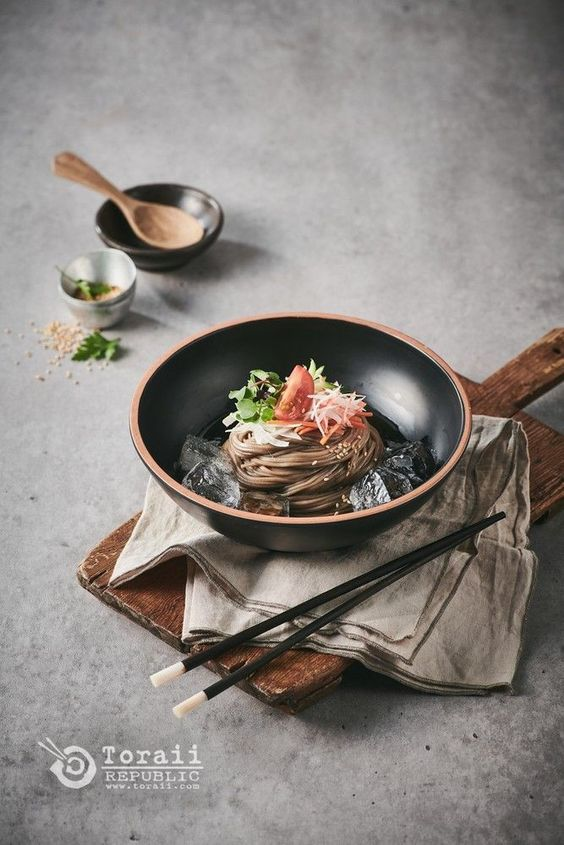
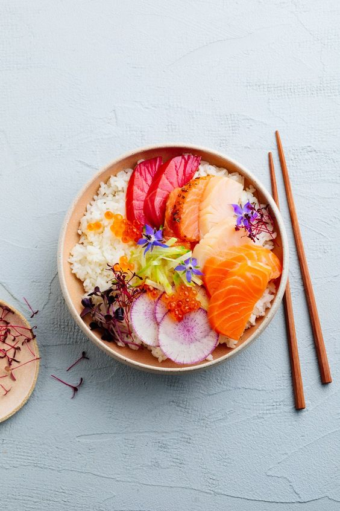
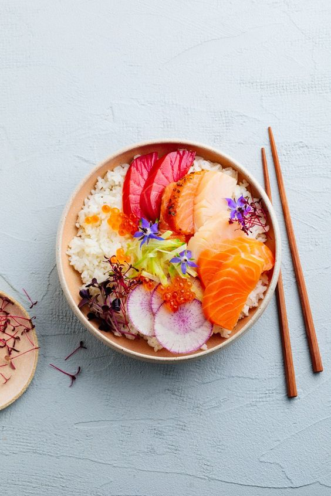
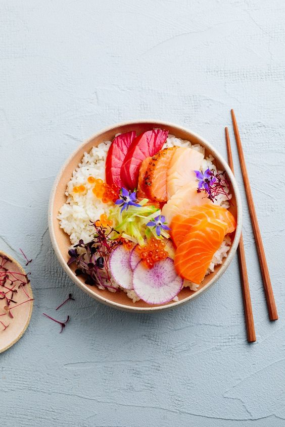

“A dish should have flavor, texture, appearance and smell, but I'm doing it differently. We take Chinese food, play with your sentiments, memories of it, and then take you to the border; you won't fall over the edge, but you get excitement.”
Todos los sabores de la fusion asiatica en tu casa
Reseñas



 

